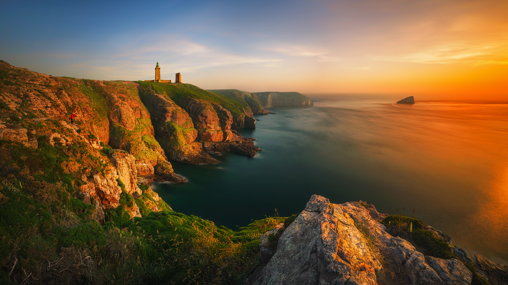

Enjoy every moment
Италия
Это удивительная страна, в которой переплелись история и современность, различные эпохи и богатое культурное наследие, традиции и
самобытность. Памятники старины времен Рима, очаровывающая романтика Венеции, холмистая панорама Тосканы, южные склоны Альп,
чудесная природа, солнце, море, воздух – всё это Италия!
Перейти
Перейти
1
Черногория
Молодая страна с богатым событиями прошлым. Она небольшая, но гостеприимная, очень популярна среди любителей здорового,
и в то же время бюджетного отдыха. Ее выбирают путешественники, которые в первую очередь ценят единство с природой,
так как отельная инфраструктура в этой стране развита недостаточно хорошо.
Перейти
Перейти
2
Франция
Изысканная и пикантная страна, не перестающая удивлять и восхищать. Кто хоть однажды побывал во Франции, почувствовал
её неповторимый дух и аромат, познакомился с её культурой и историей, попробовал тающие на языке изыски местной кулинарии.
Сюда приезжают, чтобы соприкоснуться с совершенством, ведь французы смогли до недостижимых высот поднять репутацию всего
французского — моды, кулинарии, культуры и изысканных развлечений.
Перейти
Перейти
3
Россия
Крупнейшее в мире государство, занимающее 1/8 часть суши и расположенное на северо-востоке Евразии.
Россия — страна с многовековой историей, богатым культурным наследием и щедрой природой.
В России можно найти почти всё то, что встречает путешественник по отдельности в той или иной стране —
солнечные пляжи субтропиков и снежные горные вершины, бескрайние степи и глухие леса, бурные реки и тёплые моря.
Перейти
Перейти
4
Швеция
Пятое по величине государство Европы, занимающее восточную и южную части Скандинавского полуострова и омываемое
Балтийским морем.Здесь вам и роскошные горнолыжные курорты, чьи трассы по оснащенности не уступают соседним финским,
а зачастую и превосходят их, и потрясающие возможности для эко-туризма: чего только стоят бескрайние лапландские просторы,
непроходимые лесные чащи и ультрамариновые озера, которыми усеян юг страны!
Перейти
Перейти
5
Отзывы наших клиентов
Елена
Автобусный тур в Италию
Оценка:
8/10
8/10
Плюсы:
Индивидуальный подход и дешевые билеты.
Индивидуальный подход и дешевые билеты.
Минусы:
Слишком долгая дорога.
Слишком долгая дорога.
Была в Венеции 3 раза и город никогда не впечатлял. Не понимала, почему люди находят город прекрасным, романтичным. Везде грязь, куча людей, шум.
Обратилась в эту компанию, предложили стандартный маршрут в Италию на автобусе, попутно заезжая в другие города. Хотелось бы заострить внимание именно на Венеции. Ведь по приезду оказалось, что вместо катера как прошлые разы, мне организовали поедку на поезде до самого города.
Как мне объяснили после, если посмотреть на карту города, то можно увидеть, что ж/д вокзал находится на противоположной стороне от площади Св. Марко. А это значит, что возвращаться придется через весь город.
К тому времени уже наступил вечер, спала жара, появились небольшие тучи и карта вела нас обратно по немноголюдным местам. И именно это позволило мне понять, что город действительно прекрасен.
Это позволило мне сделать очень важный вывод :
Если тебе не понравился город, то не факт, что он не понравится тебе в следующий раз.
Обратилась в эту компанию, предложили стандартный маршрут в Италию на автобусе, попутно заезжая в другие города. Хотелось бы заострить внимание именно на Венеции. Ведь по приезду оказалось, что вместо катера как прошлые разы, мне организовали поедку на поезде до самого города.
Как мне объяснили после, если посмотреть на карту города, то можно увидеть, что ж/д вокзал находится на противоположной стороне от площади Св. Марко. А это значит, что возвращаться придется через весь город.
К тому времени уже наступил вечер, спала жара, появились небольшие тучи и карта вела нас обратно по немноголюдным местам. И именно это позволило мне понять, что город действительно прекрасен.
Это позволило мне сделать очень важный вывод :
Если тебе не понравился город, то не факт, что он не понравится тебе в следующий раз.